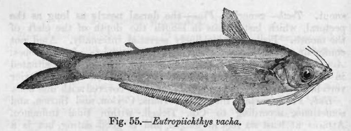

बचवाBachcha
Eutropiichthys vacha · Schilbeidae · FSH-0036

- Scientific name वैज्ञानिक नाम
- Eutropiichthys vacha (Hamilton, 1822)
- Family कुल
- Schilbeidae
- Hindi हिंदी
- बचवा
- Local names स्थानीय नाम
- bachwa, bachua, bachcha, vacha
- Status here यहाँ की स्थिति
- native
- Movement आवागमन
- Moves locally with water and season
- Known from कहाँ दर्ज
- Others have published records from the wider Awadh–Purvanchal plain, none yet from Basti–Ayodhya अवध–पूर्वांचल से दूसरों के प्रकाशित अभिलेख, बस्ती–अयोध्या से अभी नहीं
- IUCN IUCN
- LC
- Review समीक्षा
- audited and independently read
When to look कब देखें
Present all year. साल भर मौजूद।
Disperses into floodplain waters during monsoon (June–August); contracts to main river channels and deeper pools during dry season (November–May). All migrants and visitors →
Uses and possibilities उपयोग और संभावनाएँ
Drawn from the documented uses in the profile below, where each is labelled traditional, current or a research lead. All uses →
Tell it apart from इनसे अलग पहचानें
बचवा / Bachcha
Eutropiichthys vacha (Hamilton, 1822) — Schilbeidae
बचवा — छोटी, चमकीली कैटफिश जो तालाबों और नदियों में पाई जाती है। बरसात में बहुत संख्या में पाई जाती है। छोटी, स्वादिष्ट मछली, जो तलकर या करी में पकाई जाती है।
Quick Identification त्वरित पहचान
| Feature | Description |
|---|---|
| Size | 10–18 cm |
| Body | Elongate, laterally compressed; scaleless, slimy |
| Head | Small, flattened; 4 barbels |
| Colour | Silver or silver-grey; iridescent |
| Fins | Dorsal fin small; adipose fin present |
| Tail | Forked, silvery |
| Behaviour | Schooling (often in small groups); nocturnal |
Field tip: A small, silvery catfish, found in schools in monsoon floodplain waters. Often caught in traditional fish traps and hand nets. Nocturnal; most active in the evening and at night. The iridescent colouration and small size are distinctive.
हिंदी: छोटी, चमकीली मछली। झुंड में रहती है। बरसात में आती है।
Morphology आकारिकी
Biometrics (field populations):
| Measurement | Range |
|---|---|
| Standard length | 100–180 mm |
| Weight | 8–35 g |
| Barbel count | 4 pairs (2 maxillary, 2 nasal) |
| Dorsal fin spines | 1 |
| Adipose fin | Present |
| Anal fin rays | 14–17 |
Body: Elongate, moderately laterally compressed. Scaleless skin with thick mucus layer. Smaller and more streamlined than other Schilbeidae.
Head: Small, slightly flattened. Eyes moderate-sized, positioned laterally. Mouth subterminal; 4 barbels: two long maxillary barbels and two smaller nasal barbels.
Coloration: Silvery or silver-grey overall; iridescent in reflected light. Dorsum slightly darker. Fins pale or translucent.
Fins: Dorsal fin small with 1 spine and 5–6 rays. Pectoral fin with 1 spine and 8–10 rays. Ventral fin with 7 rays. Anal fin long with 14–17 rays. Adipose fin small but distinct. Caudal fin forked.
Tail: Moderately forked; pale.
हिंदी: छोटा, चपटा शरीर। चार दाढ़ियाँ। चमकीला रंग।
Behaviour & Ecology व्यवहार और पारिस्थितिकता
Schooling. Bachcha are gregarious, forming schools (particularly in flooded areas) that can number dozens to hundreds of individuals. Schools exhibit coordinated movement and feeding behaviour.
Nocturnal forager. Primarily nocturnal, emerging at dusk to feed on small invertebrates, detritus, and organic matter. Hides in dense vegetation, substrate refugia, and under banks during the day.
Locally nomadic. Exhibits marked local nomadism related to water levels. Disperses widely into floodplain water bodies, marshes, and temporary lakes during monsoon (June–August). As water recedes, concentrates in remaining pools and main river channels.
Habitat preference: Tolerates a wide range of habitats including turbid water, low oxygen, and stagnant conditions. More tolerant of environmental stress than many fish species.
Feeding ecology: Omnivorous; feeds on small invertebrate larvae, zooplankton, detritus, and plant matter. Opportunistic scavenger.
Predators: Small snakeheads, larger catfish, herons, cormorants, and humans.
हिंदी: झुंड में रहता है। रात को खाना खोजता है। गंदे पानी में भी रहता है।
Life Cycle / Phenology जीवन चक्र
| Stage / Season | Event |
|---|---|
| Monsoon (June–August) | Spawning in flooded areas; rapid growth of larvae and juveniles |
| Post-monsoon (September–November) | Migration back to main channels; growth continues |
| Winter (December–February) | Slow growth; reduced activity |
| Summer (March–May) | Pre-monsoon activity; maturation of juveniles |
| Sexual maturity | 8–12 months (rapid maturation) |
| Lifespan | 3–4 years (in natural conditions) |
हिंदी: बरसात में प्रजनन करता है। जल्दी बड़ा हो जाता है। कम उम्र जीता है।
Host Plants or Prey आहार
- Zooplankton and insect larvae (chironomid, mayfly)
- Detritus and organic matter
- Small crustaceans
- Algae and plant matter
Predators / Natural Enemies शत्रु
- Fish: Small snakeheads, larger catfish species
- Birds: Heron, egret, cormorant
- Humans: Extensively trapped and netted
Agricultural / Human Relevance कृषि प्रासंगिकता
Food fish. An important food fish in the region, though smaller than many other edible catfish. Sold fresh in local markets, particularly during monsoon when abundant. Often used in composite fish culture in ponds.
Fishing methods. Caught using:
- Bamboo traps and weirs
- Cast nets and hand nets
- Small gill nets
Nutritional value. Protein-rich; eaten fresh or dried. Important for subsistence fishing communities.
Aquaculture potential. Being domesticated in some regions due to rapid growth, ease of breeding, and acceptance of diverse feeds.
Today. Abundant in monsoon-flooded areas; seasonal supply varies greatly with monsoon intensity.
Research direction (a lead, not a result). The role of floodplain connectivity in recruitment, and the species' potential for pond aquaculture under local conditions, have not been systematically studied.
हिंदी: अच्छी खाई जाने वाली मछली। बाज़ारों में मिलती है। तालाब में पाली भी जा सकती है।
Expected Locally स्थानीय रूप से अपेक्षित
Not a field record. Written from published accounts for eastern Uttar Pradesh. No confirmed local sighting yet — if you have seen it, that is what the atlas needs.
अभी तक स्थानीय पुष्टि नहीं। यह विवरण प्रकाशित स्रोतों से है, किसी अवलोकन से नहीं।
This species is NOT a field record. The distribution below is based on published sources describing where Bachcha should be looked for in the Basti–Ayodhya region.
To be expected in all flooded areas, marshes, and temporary lakes during the monsoon and post-monsoon seasons (June–October). Also found in main river channels and permanent ponds year-round, but in lower numbers outside monsoon. Most abundant June–August when floodplain waters are filled. A net catch or photograph is a confirmed record.
Distribution वितरण
Global range: South and Southeast Asia; native to the Gangetic region and throughout the Brahmaputra system. Also found in Malaysia and Thailand.
In India: Throughout major river systems of the Indo-Gangetic plains and north-eastern India.
In Uttar Pradesh: Common in rivers and floodplain water bodies.
In Basti / eastern UP: Expected in the Ghaghra, Rapti, and their tributaries; abundant in floodplain marshes during monsoon.
Research Questions शोध प्रश्न
- How does the population size of Bachcha in flooded areas vary with monsoon intensity and duration?
- What is the sex ratio and reproductive output of wild populations?
- क्या बचवा तालाब में पाली जा सकती है, और क्या इससे आय बढ़ सकती है? (Can Bachcha be cultured profitably in ponds?)
- What is the optimal stocking density and feeding regime for pond culture?
- Does water turbidity affect larval survival and growth? (Controlled tank experiments.)
- भारत के विभिन्न क्षेत्रों में बचवे की पोषक गुणवत्ता में क्या अंतर है? (Does nutritional quality vary by region?)
Similar Species मिलती-जुलती प्रजातियाँ
| Species | How to tell apart | हिंदी | |
|---|---|---|---|
| [[pabda | Pabda]] (Ompok bimaculatus) | Larger (8–12 cm); 2 dark spots on body; different fin formula | पाबदा, धब्बा हैं |
| Other Schilbeidae | Body shape and barbel arrangement vary; check fin ray counts | अलग-अलग दाढ़ियाँ |
Field rule: A small (10–18 cm), silvery catfish with 4 barbels and a forked tail, often found in schools in flooded areas, is a Bachcha.
Taxonomy & Classification वर्गीकरण
Original description. Described by Hamilton in 1822 in Fishes of the Ganges as Silurus vacha. Later transferred to Eutropiichthys by contemporary workers.
Subspecies. Monotypic — E. vacha is the only recognised subspecies.
Family and order placement. Order Siluriformes; family Schilbeidae (glass catfish and Asian river catfish). The genus Eutropiichthys contains small Asian catfish.
Phylogenetic notes. E. vacha is related to other Schilbeidae of Asia; phylogenetic placement within the family is still being refined.
IUCN status rationale. Least Concern globally. Widespread, abundant, and adaptable to a wide range of aquatic habitats. No major threats in the core of its range.
Photo Gallery फोटो गैलरी
No photos yet — add field photos to media/species/bachcha/ and run node scripts/sync_photos.js.
Wanted photos:
- School of fish in water (झुंड)
- Dorsal view showing barbel arrangement (ऊपर से दाढ़ियाँ)
- Side view showing silvery coloration (चांदी जैसी चमक)
- In trap or net (जाल में)
- Market specimen (बाज़ार में)
References संदर्भ
- Hamilton, F. (1822). An Account of the Fishes Found in the River Ganges and Its Branches. Edinburgh.
- Talwar, P.K. & Jhingran, A.G. (1991). Inland Fishes of India and Adjacent Countries, vol. 1. Balkema. Pp. 315–317.
- Day, F. (1878). The Fishes of India, vol. 1. Williams and Norgate, London.
- Hora, S.L. & Pillay, T.V.R. (1962). Handbook of Fish Culture in the Indo-Pacific Region. FAO Fisheries Biology Technical Paper no. 14.
- Sarkar, U.K., Pathak, A.K., Garg, R. & Mishal, P. (2005). Seasonal variations in fish diversity of river Gomti, a tributary of river Ganges. Current Science, 88: 1–8.
- GBIF Occurrence Data — Eutropiichthys vacha, India.
Source file: species/fauna/fish/bachcha.md